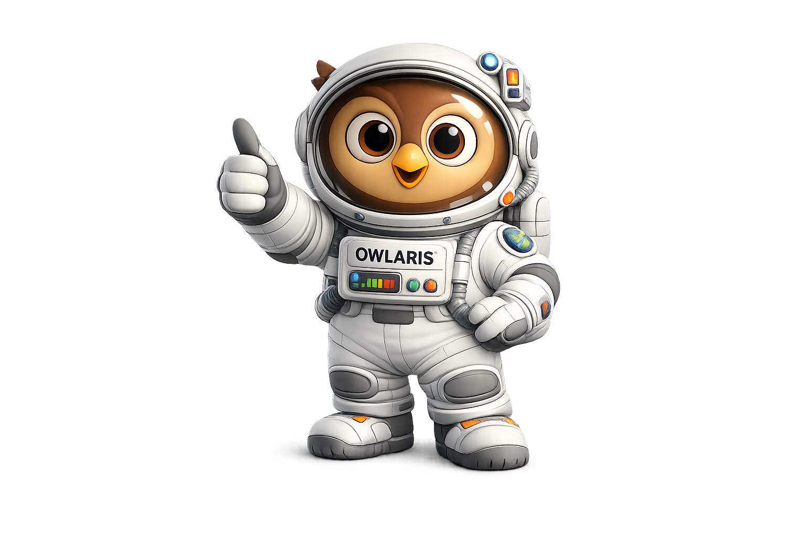

La Bitácora de Owlaris

¡Owlaris listo para explorar!
"¡Hola, pequeños exploradores del espacio! He navegado el gélido espacio exterior analizando otros mundos... Pero al regresar y pisar el suelo de casa, descubrí que la vida necesita condiciones de vida exactas, no solo un lugar donde estar. ¡Acompáñame a desvelar este secreto!"
🎯 Tu Gran Meta: Investigar el Sistema Solar y aprender por qué el suelo terrestre es el refugio definitivo para la biodiversidad.
Navegando el Sistema Solar
Haz clic en los planetas para ver las duras condiciones ambientales analizadas por Owlaris.
¡Analizador de Owlaris!
Selecciona un astro a la izquierda para analizar sus duras condiciones.
¿Qué hace a la Tierra un lugar único?
Activa los tres interruptores de la "Fórmula de la Vida" para ver florecer nuestro planeta.
La Tierra está fría, oscura y vacía sin elementos biológicos.
🛠️ Construye las Condiciones perfectas:
¡El Suelo no es solo barro aburrido!
Haz clic en cada capa del subsuelo para cavar profundo y revelar misterios ecológicos.
¡Excavadora de Owlaris!
Selecciona una capa terrestre a la izquierda para empezar a desenterrar secretos.
Biodiversidad: Una Súper Red
¡Un puñado de tierra contiene millones de microbios! Ayuda a Owlaris a asignar a cada uno su rol vital.
🔬 1. Selecciona un Organismo:
🧪 2. Asígnale su Trabajo Ideal:
El Gran Logro de Owlaris
¿Qué nos enseña Owlaris en esta misión?
Enormes planetas orbitan en el Sistema Solar, pero carecen de una capa fértil. El gran secreto de nuestra biodiversidad no es solo tener un lugar en el espacio exterior, sino proteger este valioso suelo templado donde el agua, el aire y millones de pequeños amigos microscópicos trabajan sin descanso.
✨ ¡Completa tu bitácora de explorador!
¡Estás listo para tu próxima gran aventura en casa! Dibuja tu propio planeta alienígena imaginando qué tipo de seres vivirían si su suelo fuera rocoso o arenoso, o usa una lupa para explorar los organismos activos que viven en el jardín, el patio o en las macetas de tu hogar.